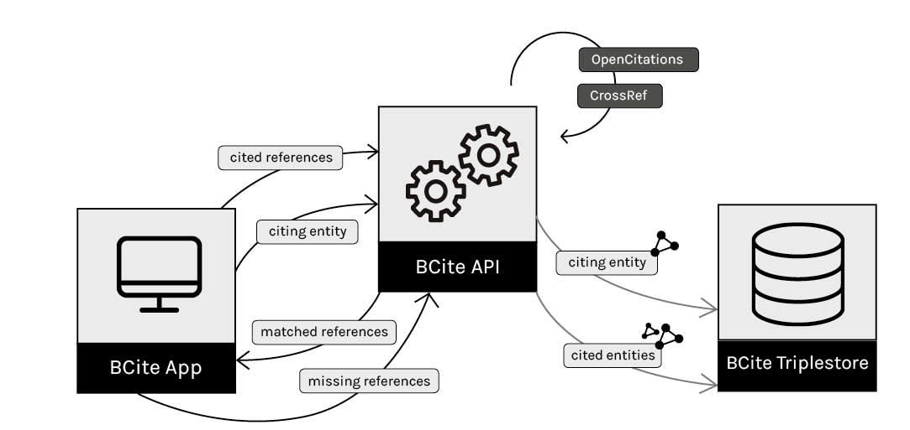

In the past year we have seen the release of a huge volume of open bibliographic citation data, thanks primarily to the efforts of the Initiative for Open Citations (I4OC, https://i4oc.org). However, the incomplete coverage of these data is one of the most important issues that the open scholarship community is currently facing. In this paper we present an approach for creating open citation data while supporting journal editors in their task of curating the reference lists contained within articles submitted to them for publication. Our contributions are twofold: (a) a basic workflow that supports editors in the management and correction of bibliographic references, and (b) a tool, called BCite, that creates open citation data compliant with an existing RDF-based citation repository: the OpenCitations Corpus .
The Initiative for Open Citations (I4OC, https://i4oc.org) was launched in April 2017 to persuade publishers, who were already depositing their article references in Crossref (https://crossref.org), to make them open and accessible for reuse. More generally, I4OC campaigned for bibliographic citations to be structured (i.e. expressed in machine-readable formats), separate (i.e. available without the need to access the source bibliographic products in which the citations are created) and open (i.e. freely accessible and reusable) data – what we will term 'open citation data' in this paper (see for a technical definition of open citation
). As a consequence of these activities, about 500 million citation links from 19 million published articles have been made open during the past year and are now available through the Crossref API (https://api.crossref.org). However, they are not exposed natively using Semantic Web technologies. To achieve this further end, several projects and organisations supporting I4OC, such as OpenCitations (http://opencitations.net) , are active in curating open citation data in RDF, so as to be queryable using SPARQL and downloadable in various formats using the normal web content negotiation mechanism.
Despite the success of the I4OC campaign, the incomplete coverage of such open citation data is one of the most important issues that the open scholarship community is currently facing. This is due to at least two factors. First, some academic disciplines, in particular the Social Sciences and the Humanities, are inherently under-represented in such citation datasets. In fact, bibliographic references included in articles within these disciplines tend to be missed even in the major commercial citation indexes such as Scopus (https://www.scopus.com/) and Web of Science (https://clarivate.com/products/web-of-science/). For instance, according to our knowledge, while the article (published in the journal Conservation Science in Cultural Heritage) references the book chapter , the related citation is not reported in any citation index. On the other hand, several smaller journals and/or publishers do not have the financial capabilities nor the technical support to submit their citation data to Crossref so as to expose them in a centralized repository as open citation data, where they can easily be reused by other parties.
Three particular research questions (RQs) can be derived by analysing the aforementioned situation:
Is it possible to develop a workflow that allows stakeholders (e.g. a publisher, a journal editor, a researcher) to increase the coverage of existing RDF-based open citation datasets?
To which extent can stakeholders benefit of such a workflow in the course of their daily activities?
How much additional data would such a workflow contribute to the existing RDF-based open citation datasets?
A possible solution to the aforementioned questions is to develop or adopt easy-to-use interfaces that allow users to create new RDF citation data while, at the same time, supporting them in some routine task involving bibliographic data, specifically the task of checking that the reference list of an accepted work has been correctly formatted according to specific requirements of the publisher (e.g. the reference style, the selection of the information included, presence of identifiers and external links) before it appears in the final version-of-record of the work.
To this end, we have developed a prototype tool called BCite, which we introduce in this paper. BCite is based on a strategy of reciprocal benefit, enabling editors to obtain 'clean' verified references for the citing article they have in hand, while at the same time transforming those references into RDF data so as potentially to contribute to a public citation corpus. BCite is designed to provide a full workflow for citation discovery, allowing users to specify the references as provided by the authors of the article, to retrieve them in the required format and style, to double-check their correctness, and, finally, to create new open citation data according to the OpenCitations Data Model , so as to permit their future integration into the OpenCitations Corpus (OCC) , i.e. the RDF dataset of open citation data maintained by OpenCitations. We have undertaken a preliminary evaluation of BCite's ability to answer the aforementioned research questions. The outcome of our experiments, albeit with a limited set of input documents, is encouraging and shows that the current coverage of citation data in the OpenCitations Corpus could easily be extended by using the application.
The rest of the paper is structured as follows. In we introduce the materials and methods we have used for implementing BCite. In we introduce BCite by briefly describing its components and the workflow it implements. In we evaluate our tool by using the reference lists included in some published articles of different disciplines. In we introduce some of the most important related works in the area. Finally, in we conclude the work sketching out some future works.
OpenCitations is a scholarly infrastructure organisation dedicated to provision of open bibliographic citations and associated tools and services. To date, the main work of OpenCitations has been the creation and current expansion of the Open Citations Corpus (OCC) , an open repository of scholarly citation data made available under a Creative Commons public domain dedication, which provides in RDF accurate citation information (bibliographic references) harvested from the scholarly literature. These are described using the SPAR Ontologies according to the OpenCitations Data Model , and are made freely available so that others may freely build upon, enhance and reuse them for any purpose, without restriction under copyright or database law. The contents of OCC can be explored by humans using OSCAR, the OpenCitations search interface, and navigated by means of its browse interface LUCINDA. Programmatic access to the OCC is available either using its SPARQL endpoint or its REST API (coming Q3 2018). Additionally, metadata for individual bibliographic entities can be accessed via a simple HTTP request using their individual URIs (e.g. https://w3id.org/oc/corpus/br/1).
The ingestion of citation data into OCC is currently handled by two Python modules, the Bibliographic Entries Extractor (BEE) and the SPAR Citation Indexer (SPACIN). While BEE is responsible for the creation of JSON files containing reference lists of published articles, SPACIN processes each of these JSON files, retrieves metadata about all citing/cited articles by querying the Crossref and the ORCID APIs, and stores the generated RDF resources both in the file system (as JSON-LD files) and in the OCC triplestore. Parts of these two Python modules have been reused for the development of BCite, which consequently creates open citation data compliant with the OpenCitations Data Model.
BCite is a Web application that (a) facilitates some of the tasks of a user (e.g. a journal editor) since it allows him/her to semi-automatically curate the list of bibliographic references included in a soon-to-be-published article, and, simultaneously, (b) creates RDF-based open citation data compliant with the OpenCitations Data Model. According to the OpenCitations Data Model specification, we will refer to an article and to the bibliographic references included in its reference list as the citing bibliographic resource and its bibliographic entries respectively, to the referenced works as the cited bibliographic resources, and to the links between citing and cited works as citations.
Components. BCite is developed as a Python Web application (using the web.py framework) that can be run on a local machine. It is available on GitHub at https://github.com/opencitations/bcite, and includes the following logical components: (i) the BCite App, a web interface for data entry and data curation; (ii) the BCite triplestore, a Blazegraph instance (https://www.blazegraph.com) for storing the generated RDF triples, the triplestore that is used by OpenCitations for allowing the access to all its RDF repositories; (iii) the BCite API, which is responsible for using the OpenCitations Python modules for creating open citation data and storing them in the triplestore. The BCite workflow and its components are shown in .

Workflow. BCite includes three main activities: the creation of the metadata for a new citing bibliographic resource, the lookup of the cited bibliographic resources specified by its bibliographic entries (and if necessary the correction of those entries using the metadata returned for the cited bibliographic resources), and the update of the triplestore.
Creating a citing bibliographic resource. At first, the user inputs via the BCite App all the metadata of a citing bibliographic resource (authors, title, journal, volume, issue, year, publisher, and DOI) and the list of bibliographic entries to be matched. A citation style can also be selected for the formatting of the output references. A request is then sent to the BCite API, which first creates a RDF representation of the citing bibliographic resource compliant with the OpenCitations Data Model, and then writes the generated triples into the BCite triplestore.
Reference lookup. For each of the citing bibliographic resource's references (bibliographic entries) provided by the user, a request is sent to the BCite API to look for matches with the cited bibliographic resources within the BCite triplestore. If no matches are found in the BCite triplestore, the BCite API uses the OpenCitations scripts to send a request to the Crossref API for any available metadata on the cited bibliographic resource – and to the ORCID API for author disambiguation purposes. For each of the matched references, an RDF entity for the cited bibliographic resource is either retrieved (if already present in the BCite triplestore) or created (if returned by the Crossref API). Then, the BCite API sends back to the BCite App the text of the bibliographic entry of the cited bibliographic resource, formatted according to the requested citation style, for delivery to the user. If no record is found within the BCite triplestore and the Crossref API does not return any match, an empty string is returned instead.
Correction and update. As shown in , all the results are presented to the user in a table, with the submitted references from the citing bibliographic resource in the first column, and the proposed matched or corrected references in the second column. The user can then (a) accept the proposed text of the bibliographic entry as is; (b) accept it after modifying some part of it within the table itself; or (c) reject the proposed bibliographic entry when it does not specify the intended cited bibliographic resource, keeping instead the originally submitted text for the bibliographic entry. Finally, all the accepted/corrected bibliographic entry texts are sent back to the BCite API, and all the triples relevant to the citing and cited bibliographic resources are stored in the BCite triplestore, including the related provenance information according to the OpenCitations Data Model. An example of the RDF statements generated by BCite is shown as follows (in JSON-LD):
{
"@context": "https://w3id.org/oc/corpus/context.json",
{
"a": [ "document", "article" ],
"citation": [
"http://localhost:8000/corpus/br/21",
"http://localhost:8000/corpus/br/17"
],
"contributor": [
"http://localhost:8000/corpus/ar/7",
"http://localhost:8000/corpus/ar/5",
"http://localhost:8000/corpus/ar/3",
"http://localhost:8000/corpus/ar/4",
"http://localhost:8000/corpus/ar/6"
],
"format": "http://localhost:8000/corpus/re/1",
"identifier": [
"http://localhost:8000/corpus/id/5",
"http://localhost:8000/corpus/id/3"
],
"iri": "http://localhost:8000/corpus/br/5",
"label": "bibliographic resource 5 [br/5]",
"part_of": "http://localhost:8000/corpus/br/6",
"prism:publicationDate": {
"a": "year_month_day",
"value": "2015-03-09"
},
"reference": [
"http://localhost:8000/corpus/be/7",
"http://localhost:8000/corpus/be/5",
"http://localhost:8000/corpus/be/8",
"http://localhost:8000/corpus/be/6",
"http://localhost:8000/corpus/be/3",
"http://localhost:8000/corpus/be/4"
],
"title": "Setting our bibliographic references free: towards open citation data"
},
{
"a": "role",
"iri": "http://localhost:8000/corpus/ar/4",
"label": "agent role 4 [ar/4]",
"next": "http://localhost:8000/corpus/ar/5",
"role_of": "http://localhost:8000/corpus/ra/4",
"role_type": "author"
},
{
"a": "agent",
"fname": "Peroni",
"gname": "Silvio",
"iri": "http://localhost:8000/corpus/ra/4",
"label": "responsible agent 4 [ra/4]"
},
...
}
A preliminary evaluation of BCite was performed with the goal of demonstrating that our tool allows us to answer the three research questions mentioned in the introduction, i.e. to implement a mechanism to increase the coverage of existing RDF-based open citation datasets and to facilitate the editor's task of reference list processing of to-be-published journal articles. In particular, we were interested in (i) measuring the number of the references returned by the BCite API; and (ii) quantifying the contribution of new citation entries to the OpenCitations Corpus (OCC), i.e. how much new knowledge could, in principle, be added to it, bearing in mind that the OCC presently contains mainly articles coming from the biomedical and life science domains. All the data gathered during the experiment are available in .
To demonstrate the aforementioned points, we use three journal articles from different disciplines. They are introduced as follows.
A work by Hammarfelt and Haddow published by the Journal of the Association for Information Science and Technology (JASIST), that deposits all its bibliographic metadata in Crossref, where, presumably, a large proportion of the bibliographic resources referenced by the reference entries contained in the journal's articles are included in Crossref, due to the authoritativeness of the journal in its domain – it is one of the top-rated journals in Library and Information Science. In this scenario, aimed at assessing mostly the ability of BCite to obtain the correct text of the reference entries in the specified format, we modified the reference list of the article to reproduce common mistakes that can be possibly introduced by either article authors or bibliographic curators (missing authors, wrong publication years, incomplete references, etc.). We expected that BCite would return an high number of 'known' reference entries, and that some of these references would already be present in the OCC, due to the authoritativeness of the journal.
A work by Biagetti from the Journal of Library and Information Science (JLIS). While the bibliographic data of the journal are curated and indexed in major citation indexes, this article belongs to the Digital Humanities area that is not fully represented in Crossref – in particular the pure Humanities section. Hence, we expected that BCite would return a lower number of 'known' reference entries. However, in principle, the contribution of new citation data to the OCC should still be high. In fact, it is likely that the cited bibliographic resources are not already present in the Corpus, since it covers mainly a different domain.
A work by Citti from a minor journal of the Humanities domain, i.e. Conservation Science in Cultural Heritage. This journal usually contains articles that cites older bibliographic resources from the same domain, which is poorly covered in Crossref, as mentioned above. Therefore, we expected that BCite would not be able to retrieve a large number of reference entries. However, due to the scholarly domain under consideration, we expected that almost all the retrieved bibliographic resources could be added to the OCC as new citations, since they were likely not to be already contained within the Corpus.
As shown in , for the aforementioned articles (Citing article
), we recorded the total number of reference entries in their reference lists (column Reference entries
); the number of the reference entries – and, consequently, the related cited bibliographic resources – returned by BCite (column Returned by BCite
); the number of such cited bibliographic resources that were already present in the OCC (column Already included in the OCC
), and thus the potential contribution to the OCC from the bibliographic resources created by BCite that were not previously included in the OCC (column Potential contribution to the OCC
).
| Citing article (and test case) | Reference entries | Returned by BCite | Already included in the OCC | Potential contribution to the OCC |
|---|---|---|---|---|
|
42 |
31 (73.8%) |
9 (21.4%) |
22 (70.9%) out of 31 |
|
|
30 |
15 (50.0%) |
5 (16.5%) |
10 (66.6%) out of 15 |
|
|
40 |
7 (17.5%) |
0 (0%) |
7 (100%) out of 7 |
While these studies are at a very early stage, some conclusions can already be drawn. First, we can confirm that all the reference entries returned by BCite in the test case 1 were correct, even when the reference entries specified initially as input had been modified to include errors. Indeed, no mismatches were produced by BCite for such altered references. This suggests that BCite could provide good support for editors by automating the reconciliation of bibliographic data.
The outcomes of the first two test cases (1 and 2) are pretty close. While, as expected, BCite returned more information for the reference entries in the Hammarfelt and Haddow's article (i.e. 73.8% of the references were found), the figures of those already included in the OCC and the related potential contribution to the Corpus – i.e. the number of cited bibliographic resources returned by BCite that were not included in the OCC – were similar. In fact, we had that only 21.4% (test case 1) and 16.5% (test case 2) of the bibliographic resources returned by Bcite that were already included in the OCC, thus resulting in a potential addition of 70.9% (test case 1) and 66.6% (test case 2) additional bibliographic resources (among the returned ones) to the Corpus.
The outcomes of the test case 3 were more radical, since only a limited amount of input reference entries (17.5% of the total) were returned by BCite. However, the potential contribution to the OCC is incredibly high, since, in this case, none of the returned bibliographic resources where already available in the Corpus.
Recalling the research questions introduced in , these outcomes reveal that editors, in principle, could give a significant contribution to the OCC through the addition of the data retrieved by using BCite. This would also allow us to extend significantly the actual coverage of the OCC, since to date it has been mainly covered the biomedical and life sciences works. In addition, in all the three test cases, the reference entries that were not returned by BCite (i.e. 26.2%, 50%, and 82% of the total respectively) were also missing in Crossref and in the OCC. A possible reason for this could be related to the publication dates of the cited bibliographic resources (since older publications are less likely to be openly accessible and available in open indexes), to publications in non-English languages (e.g. publications in Italian), or to publications in specific domains (e.g. Humanities).
Plenty of works have been published in the past years on the main topics touched on in this paper: curation methodologies and tools, and the promotion and release of open scholarly data.
Curation methodologies have been extensively studied over the years – see, for instance . Tools to support authors for data curation have been also proposed, such as Recite (https://reciteworks.com/) which however only supports in-text reference checking. Other tools have been released to help users and librarians in the management of citations (e.g. RefWorks, EndNote, Mendeley and Zotero, compared at https://en.wikipedia.org/wiki/Comparison_of_reference_management_software), although these do not offer the production of RDF data.
A number of initiatives for producing open scholarly bibliographic data have been also proposed in the recent years, in addition to the OpenCitations Corpus . For instance, OpenAIRE (https://www.openaire.eu/) provides a number of services (from deposition to discovery to statistics) for thousands of Open Access scholarly datasets, although it currently does not include article citations. Springer Nature has recently published its SciGraph (http://scigraph.springernature.com), i.e. an open knowledge graph of Spinger Nature’s scholarly data, but again this does not include article citations. Scholarly Data (http://www.scholarlydata.org/) allows the creation and exploration of data about Computer Science Conferences and Workshops. WikiCite includes a series of a collaborative activities to build a bibliographic database in Wikidata using a semi-automatic workflow. In the context of the Linked Open Citation Database, the work of presents a semi-automated system for the creation and storage of citation data to support digital libraries in the data curation workflow.
In this paper we presented BCite, a service for bibliographic data curation and generation of RDF-based open citation data compliant with the OpenCitations Data Model. We showed how a simple tool based on a strategy for reciprocal benefit can support journals (especially the smaller ones that have less resources for curatorial activities) and their editors, aiding them in the process of bibliographic data cleaning, while also providing potential contributions to an existing open citation data repository, namely the OpenCitations Corpus.
In the future, we plan to organise an extensive user-based evaluation of BCite in order to assess also its usability when it is used for addressing the task of bibliographic reference correction in real environments (e.g. in journals management systems such as the Open Journal Systems, https://pkp.sfu.ca/ojs/). In addition, we also plan to integrate BCite within the OpenCitations ingestion workflow, so as to import additional open citation data directly into the OCC from the BCite App. The current implementation of BCite does not support such direct import, since a careful study about possible issues, e.g. the openness of the license associated to the to-be-published articles, as well as the trustworthiness of BCite users,data quality issues and compliancy with the evolving OpenCitations Data Model, must be performed in advance by test users in association with the OpenCitations team.
Bailey Jr, C.W.: Digital curation bibliography: Preservation and stewardship of scholarly works, 2012 supplement (2013), http://digital-scholarship.org/dcbw/
Biagetti, M.T.: An ontological model for the integration of cultural heritage information: Cidoc-crm. Italian Journal of Library, Archives and Information Science 7(3), 43–77 (2016). https://doi.org/10.4403/jlis.it-11930
Citti, F.: Paolo Bufalini and the classics: Towards a digital edition of his note-book
. Conservation Science in Cultural Heritage 8(1), 65–89 (2008). https://doi.org/10.6092/issn.1973-9494/1396
Hammarfelt, B. , Haddow, G.: Conflicting measures and values: How humanities scholars in australia and sweden use and react to bibliometric indicators. Journal of the Association for Information Science and Technology. https://doi.org/10.1002/asi.24043
Johnston, L.R.: Curating research data volume one: Practical strategies for your digital repository. Curating Research Data (2017), https://www.alastore.ala.org/content/curating-research-data-volume-one-practical-strategies-your-digital-repository
Lauscher, A., Eckert, K., Galke, L., Scherp, A., Rizvi, S.T.R., Ahmed, S., Dengel, A., Zumstein, P., Klein, A.: Linked Open Citation Database: enabling libraries to contribute to an open and interconnected citation graph (2018)
Lord, P., Macdonald, A., Lyon, L., Giaretta, D.: From data deluge to data curation. In: Proceedings of the 3rd UK e-Science All Hands Meeting. pp. 371–375 (2004), http://www.ukoln.ac.uk/ukoln/staff/e.j.lyon/150.pdf
Nuzzolese, A.G., Gentile, A.L., Presutti, V., Gangemi, A.: Conference linked data: The ScholarlyData project. In: In Proceedings of the 15th International Semantic Web Conference. pp. 150–158 (2016). https://doi.org/10.1007/978-3-319-46547-0_16
Peroni, S., Shotton, D.: OpenCitations Data Model (2018). https://doi.org/10.6084/m9.figshare.3443876
Peroni, S., Shotton, D.: The SPAR Ontologies. In: Proceedings of the 17th International Semantic Web Conference. Springer (2018). https://w3id.org/spar/article/spar-iswc2018/
Peroni, S., Shotton, D., Vitali, F.: One year of the OpenCitations Corpus – Releasing RDF-based scholarly citation data into the public domain. In: Proceedings of the 16th International Semantic Web Conference. pp. 184–192 (2017). https://doi.org/10.1007/978-3-319-68204-4_19
Renear, A.H.: Text encoding. A Companion to Digital Humanities 219, 218–239 (2004). https://doi.org/10.1002/9780470999875.ch17
Peroni, S., Shotton, D.: Open Citation: Definition. Figshare (2018). https://doi.org/10.6084/m9.figshare.6683855
Tiddi, I., Peroni, S., Daquino, M.: BCite preliminary evaluation. Figshare (2018). https://doi.org/10.6084/m9.figshare.6462443
This work will be published as part of the book Emerging Topics in Semantic Technologies. ISWC 2018 Satellite Events. E. Demidova, A.J. Zaveri, E. Simperl (Eds.), ISBN: 978-3-89838-736-1, 2018, AKA Verlag Berlin
.